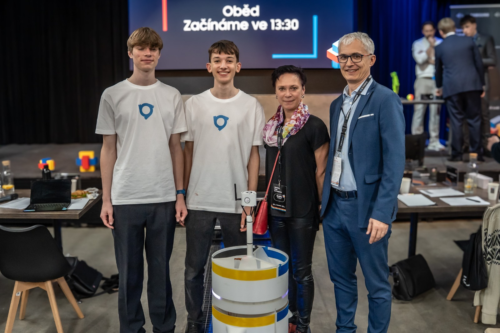
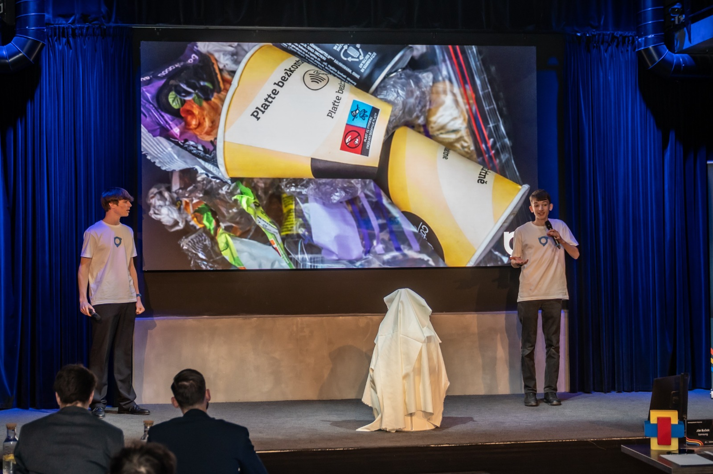
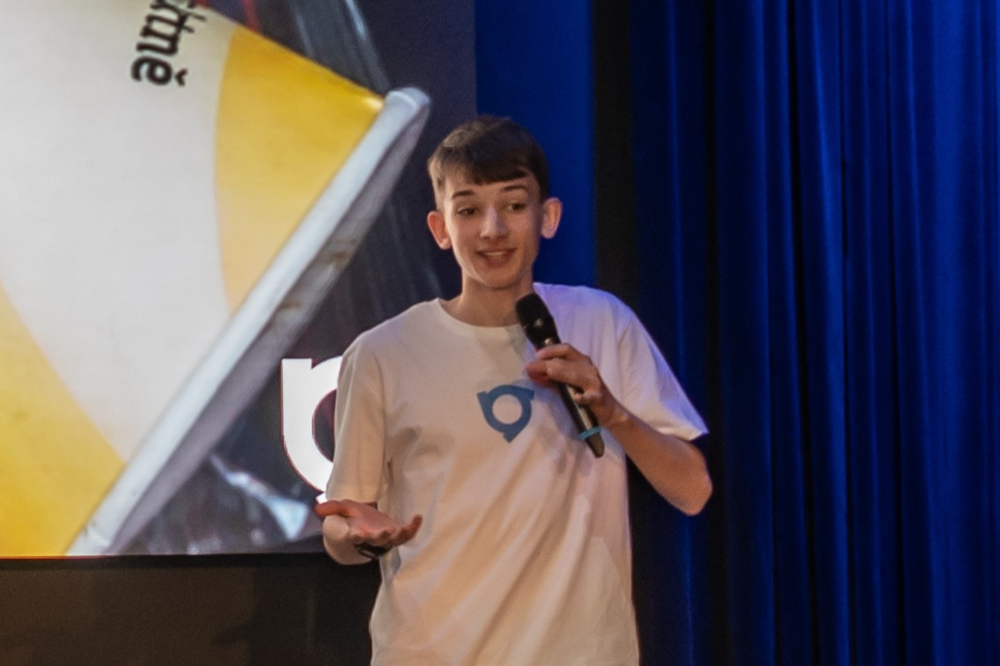

Inteligentní třídění odpadu
28. 04. 2026
Zakládající člen studentské iniciativy VLČR Robin Josef Šafařík společně s Adamem Novákem, rovněž členem VLČR, se úspěšně zúčastnili prestižní technologické soutěže SAMSUNG Solve for Tomorrow. V rámci tohoto projektu vyvinuli prototyp chytrého odpadkového koše, který využívá prvky umělé inteligence k automatickému třídění odpadu.
Zařízení je postaveno na platformě mikrokontroléru ESP32 a využívá integrovanou kameru k analýze vhazovaných předmětů. Systém v reálném čase porovnává obraz s rozsáhlou databází, která byla vytvořena speciálně pro tento účel. Pokud koš vyhodnotí, že předmět směřuje do správné přihrádky, umožní jeho průchod. V opačném případě uživatele na chybu upozorní a odpad sám mechanicky roztřídí do příslušné části.
Cesta k finálnímu produktu však nebyla přímočará a vyžádala si značné úsilí při vývoji softwaru i hardwaru. „Bylo to opravdu hodně práce, od prvotního nápadu přes funkční prototyp až po samotné finále. Narazili jsme na spoustu technických problémů, ale ve výsledku jsme uspěli,“ ohlíží se za náročným procesem Robin Josef Šafařík.
Tento úspěch opět potvrzuje, že členové VLČR se aktivně věnují technickým inovacím a moderním technologiím, které mají potenciál zlepšovat každodenní život i životní prostředí. Projekt ukazuje, jak důležité je propojovat teoretické znalosti s praktickým řešením aktuálních společenských výzev, jako je právě efektivní recyklace.
Velké poděkování patří organizátorům soutěže za možnost prezentovat inovativní nápady a všem, kteří vývoj prototypu podpořili. Pro VLČR se jedná o další významný krok, který inspiruje ostatní studenty k zapojení do světa techniky a udržitelnosti.


